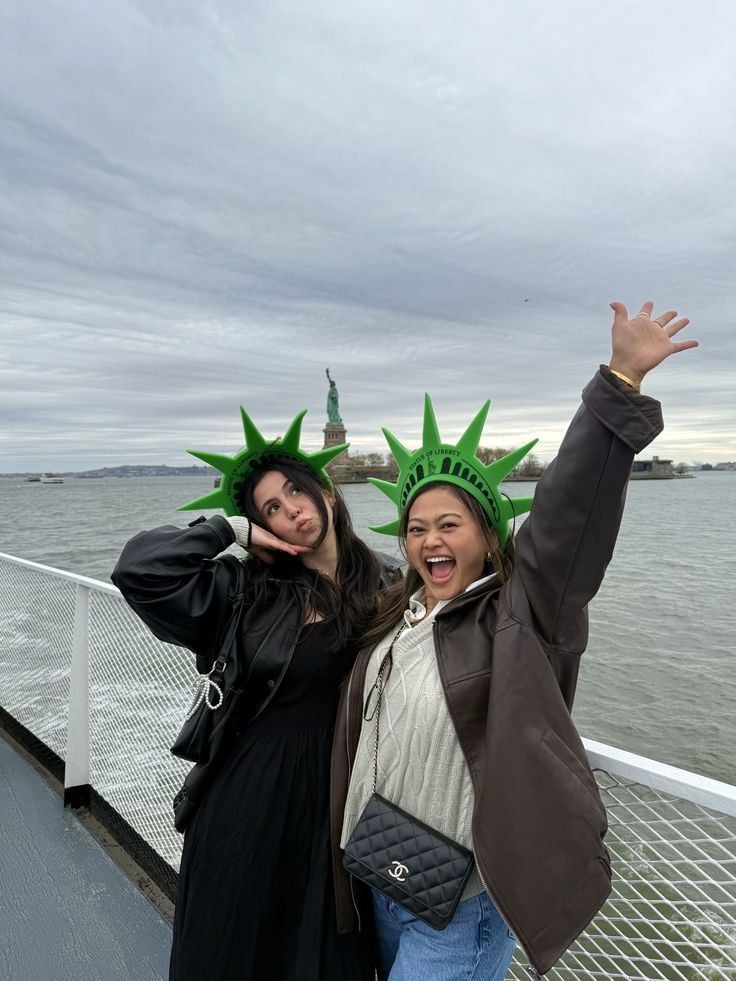
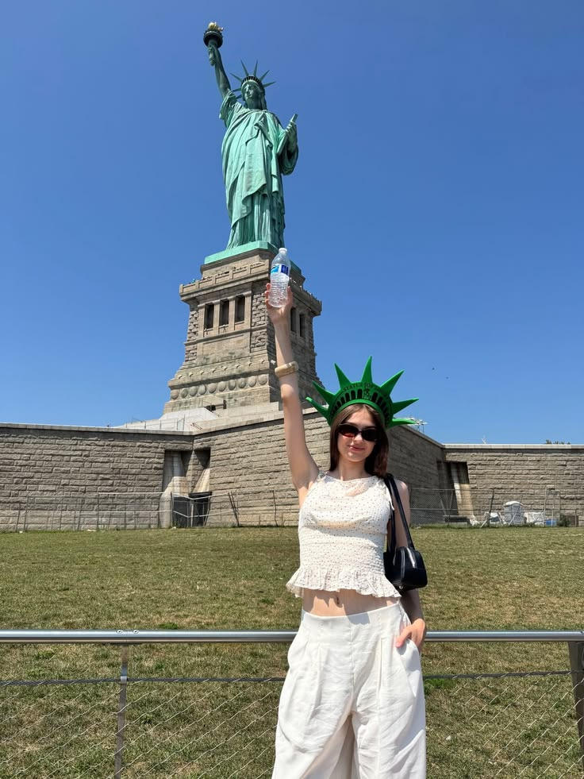
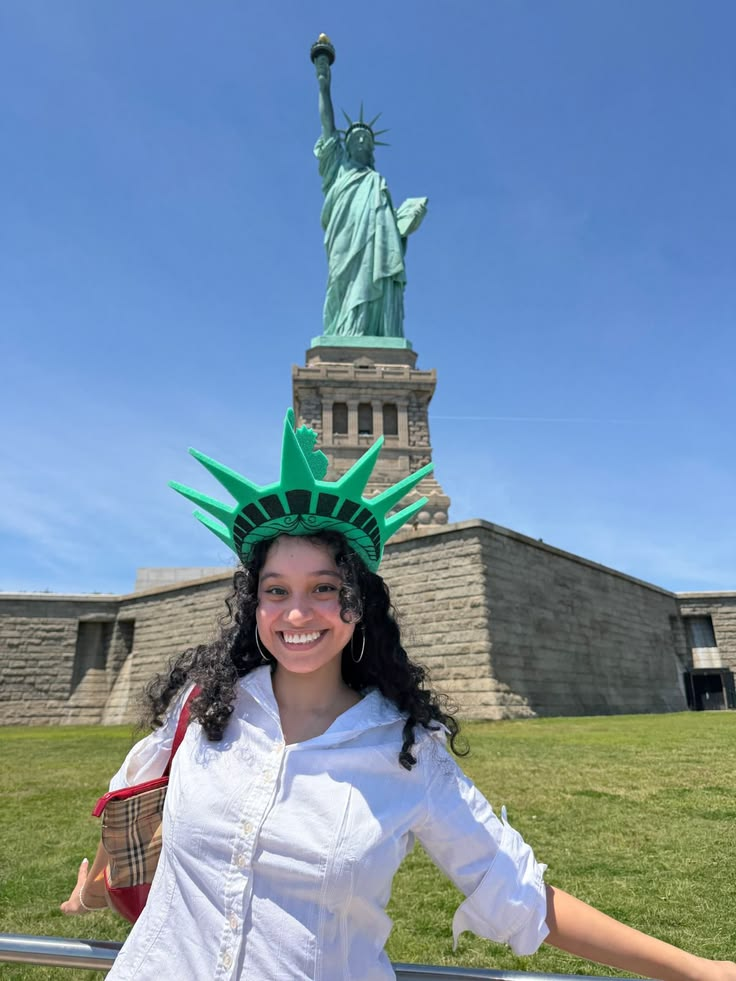
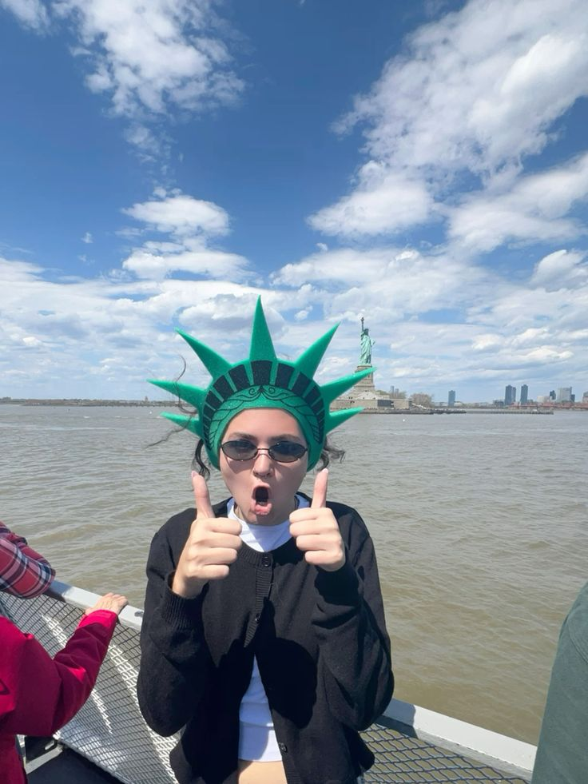
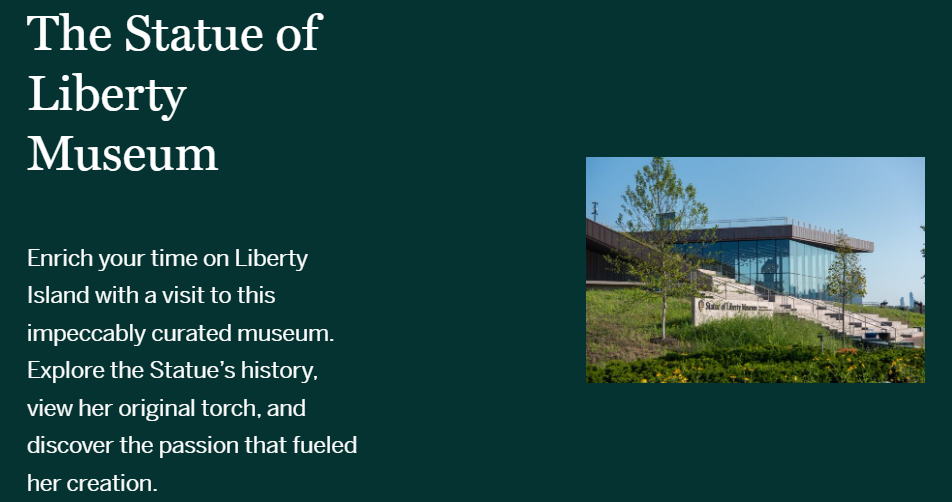
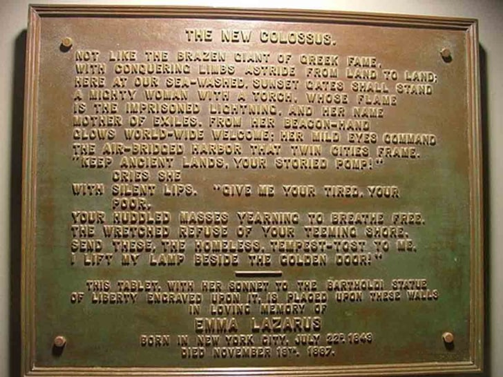

1 - Choose one example of a medium and analyse how it mediates experience, knowledge, perception, memory, movement or social relationships. Your medium could be a map, a camera, a building, a search engine, a database or a public monument, or something else you clear with me.
analyse how it mediates .:
example imgs:




the statue is experienced through a managed route. the ferry, the queue and photo spot decide how you meet/make contact w/ the monument, and the images you see online decide what you expect to find. visiting becomes partly a proof of "i was here" by taking a selfie with it (usually in ur nyc official merch) and uploading to instagram. (see imgs above in dropdown ^^^)

the statue carries knowledge in its design, but the meaning comes from the institutions around it (school curriculums, museum exhibits, books with liberty in it, etc). most people learn the sort of a gift from france, a welcome to immigrants kind of shpeel before they visit, (and the tour guides also explain in detail) and the museum and website keep that version going by choosing what to display and explain.
because the statue is so recognisable, it shapes how people picture the united states: free, welcoming, hopeful, etc. a single symbol can only show one version of that ideal, and it can hide the times the country did not live up to it
source Designed by Frédéric Auguste Bartholdi and dedicated in 1886, the statue was originally meant to celebrate the abolition of slavery and the U.S. centennial, featuring broken shackles at her feet.
a monument keeps one version of the past in public view, which makes it powerful as collective memory, but it can only remember what its makers and keepers chose to show. the statue's meaning has also shifted since 1886, from liberty and franco-american friendship (from the revolutionary war) toward immigration (as ellis island is where most US citizens are recieved present day), so it "remembers" differently now than when it was built. on a personal level, photos and merch let visitors carry that version home.
source The Statue of Liberty became a universal symbol of immigration and hope through its close proximity to Ellis Island, where over 12 million immigrants were processed between 1892 and 1954.
there is a quote that is attached to the statue on the inside::
“Give me your tired, your poor, your huddled masses yearning to breathe free, the wretched refuse of your teeming shore, send these, the homeless, tempest-tossed to me, I lift my lamp beside the golden door!”

the statue sits where many arriving ships passed, so it became tied to the idea of migration and entry. but the immigration message was added later by the poem and by public memory, not by its designers. the symbol of open arrival is also reached through controlled/monitored movement through ellis island/nyc, and it doesn't match the experience of people who were excluded or processed elsewhere.
national park service The statue was conceived in 1865 by French political thinker Édouard René de Laboulaye as a symbolic gift of friendship from the people of France to the United States.
The American Revolutionary War lasted from April 19, 1775, to September 3, 1783.
The Statue of Liberty was built in France between 1875 and 1884, shipped to the United States in 1885, and officially dedicated on October 28, 1886.
the statue is a gift that shows (creates) a relationship between two countries, a group of designers and thousands of everyday donors. calling it a gift from "the people of france" makes a political alliance feel grounded. today also ms liberty brings people into a shared ritual of "lets go visit the statue!", supported by an entire tourist economy.
i learned the version i know currently of the statue in elementary school, and i mostly know it through photos and media, which is part of what the critiquing is about. the national park service and the foundation that run the monument want it presented as a unifying national symbol, and my sources mostly come from those institutions and their museum blogging thingies, so i am seeing the monument through the versions of its story that are easiest to find via a google searh (seo, etc).
is it dangerous? is it lacking? design rationale on the bottom:
links look like this ✚ bold text looks like this ✚ italics look like this ✚ underline looks like this more cute text1870-1874: Sculptor Frédéric-Auguste Bartholdi designed the statue.
1875-1884: The statue was constructed in France under Bartholdi and engineer Gustave Eiffel.
July 4, 1884: The completed statue was officially presented to the U.S. in Paris.
1885: The statue was disassembled into over 200 crates, shipped across the Atlantic on the French ship L'Isère, and arrived in New York Harbor on June 17, 1885.
Spring-Fall 1886: Workers reassembled the statue atop its granite pedestal on Bedloe's Island.
October 28, 1886: President Grover Cleveland dedicated the monument.
i chose a website because i have not coded for a class project all semester and I am a programming major, i love making websites and i wanted to make a website for this class at some point and I felt this was a perfect opprotunity
the other options were also interesting for this though, i would have probably made a tourist pamphlet/zine about lady liberty which would have been intended to be read while you were looking at it across the pier.
i do feel however that when done correctly the website is the ultimate gateway to recieving and displaying information in multiple formats that is acessible to a wide range of people who have acess to technology.

able to track most sources on the web in the sources page
biased on pulling imgs + facts that i am selectively choosing off the internet
the form also fits my argument. the statue mediates by deciding what visitors see and what stays hidden/// the website layout does the same: the bullets and summaries get short attention span, while the dropdown toggles are holding the sources but they are ntuitive and require the user to know how to toggle them, they have images and quotes behind it but the font size is tiny on some platforms (big laptops or phones).
building this also made me look at my own position in the reflexivity section. i chose everything on the site images, facts, layout, font, information to include, so i am a mediator in the same way the institutions that run the monument are, and the trackers above are me asking the same questions of my site (whose version? what is left out?) etc etc etc